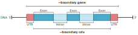
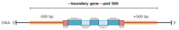

Building and Loading¶
Note
As of version 2.4.X, the PHG utilizes a new version of AnchorWave
(1.2.3).
This changes how ASM coordinates are handled. If you are using old
MAF files generated either from AnchorWave 1.2.2 or from PHGv2
version 2.3 or earlier, please use the --legacy-maf-file flag
for the create-maf-vcf command. It is recommended that you
remove your phgv2-conda Conda environment and rerun the
setup-environment command.
In this document, we will discuss the steps needed to:
- Set up a working Conda environment containing the required external software
- Initialize a TileDB-VCF instance
- Build VCF data
- Loading data into TileDB-VCF instances
Quick start¶
-
Set up the PHGv2 Conda environment:
-
Initialize TileDB instances:
-
Update FASTA headers with sample information:
-
Create BED file from GFF for reference range coordinates:
-
Align assemblies:
-
Compress FASTA files
- Create VCF files
# Reference VCF phg create-ref-vcf \ --bed /path/to/ranges.bed \ --reference-file /path/to/updated/ref.fasta \ --reference-name B73 \ --db-path /path/to/dbs # MAF alignments to VCF phg create-maf-vcf \ --db-path /path/to/dbs \ --bed /path/to/ranges.bed \ --reference-file /path/to/updated/ref.fasta \ --maf-dir /path/to/maf_files \ -o /path/to/vcf_files - Load data into DBs
Detailed walkthrough¶
Preamble¶
For the following steps, I will first make an example directory to house our toy input data. The overall structure of the directory looks like the following
For the following steps, I will be using example small sequence
data from the PHGv2 GitHub repository.
This is a collection of small raw sequence files that
we use for pipeline testing. These will be placed in the data
subdirectory while files created by this pipeline will be placed in
the output subdirectory. Here, I have downloaded the following
FASTA files:
Ref.faLineA.faLineB.fa
...and have renamed and placed them (which is needed to highlight the
functionality of the "Prepare Assembly FASTA Files"
section later) in the data/ directory.
Additionally, I have downloaded a GFF file called anchors.gff
which will be used for the "Create Reference Ranges"
and "Align Assemblies" steps. Overall, my example
working directory now looks like the following:
phg_v2_example/
├── data
│ ├── anchors.gff
│ ├── Ref-v5.fa
│ ├── LineA-final-01.fa
│ └── LineB-final-04.fa
└── output
This documentation will also assume that the PHGv2 application is
placed in your system's PATH variable (see the installation
documentation for further details).
Set up Conda environment¶
Once you have downloaded the latest release of PHGv2 and have Conda installed (see the installation documentation), you will first need to set up a Conda environment to accommodate the necessary pieces of software for alignment, compression, and storage. Here is a list of essential pieces of software that will be installed in your Conda environment:
| Software | Purpose |
|---|---|
| agc | Performant FASTA genome compression |
| AnchorWave | Sensitive aligner for genomes with high sequence diversity |
| bcftools | Utilities for indexing VCF data |
| samtools | bgzip compression for VCF data |
| TileDB | Performant storage core for array data |
| TileDB-VCF | API for storing and querying VCF data |
Instead of setting this up manually, we can use the
setup-environment command which will automate this process. To
run, use the following command:
By using the prior default example, the setup-environment command
will extract an internal Conda environment file with the necessary
libraries and programs (see following code block for example file).
Optionally, if you want to add additional libraries and programs
to your PHGv2 Conda environment, you may specify the optional
parameter, --env-file. This will be a path to a local Conda
environment file. You can create the file from scratch (for example,
I will call mine phg_environment.yml) and copy over the contents
in the following block:
name: phgv2-conda
channels:
- conda-forge
- bioconda
- tiledb
dependencies:
- python=3.8
- tiledb-py=0.22
- tiledbvcf-py=0.25
- anchorwave=1.2.3
- bcftools
- samtools
- agc
Another option is to pull in the environment file directly from the GitHub repository:
curl https://raw.githubusercontent.com/maize-genetics/phg_v2/main/src/main/resources/phg_environment.yml -o phg_environment.yml
Once the local YAML file is made, we can pass it to the --env-file
parameter:
After the setup step is complete, we can activate our environment using the following conda command:
Note
It is imperative the Conda environment you create is named
phgv2-conda. This is the default environment name that PHGv2 uses
when executing shell commands from within the software.
Note
This environment will change as new versions of the software are
released. It is recommended to delete any existing phgv2-conda
environments and recreate it using the setup-environment
command. In particular with PHGv2.4, anchorwave is updated to 1.2.3 which represents a fundamental shift in how ASM coordinates are handled.
If we look in our example project directory, you will also see two
new logging (.log) files which will record all the logging and
error output from the PHGv2 command steps:
condaCreate_error.logcondaCreate_output.log
Note
If you need or want to have the Conda environment setup in a non-default
location, you must run the conda env create command manually
using the --prefix option to specify the name and location of the
environment. This created location should then be passed as the
conda-env-prefix parameter for all PHGv2 commands that have this optional
parameter. For this scenario, the .yml file should not contain the
name: section. An example of the command to create the environment in a
non-default location is:
Running phg commands¶
PHGv2 has several commands that specify an output directory. This is
depicted as either -o or --output-dir for the parameter names.
Please make sure that these directories exist in your project
before running any commands that require the -o or --output-dir
field!
Additionally, the --db-path parameter shows up in many of the PHGv2
commands. It is the path to the directory where the TileDB datasets
are stored. This parameter is an optional parameter for all commands
in which it appears. If a folder is not specified for the
--db-path, the software will use the current working directory.
When TileDB datasets are required for processing, the --db-path
parameter value will be verified to ensure the required datasets are
present. If they are not present in the --db-path folder (or in the
current working directory) the software with throw an exception.
Finally, several commands have the optional parameter `conda-env-prefix'. This parameter is used to specify the location of the conda environment when it is not in the default location and/or is named differently than the default name of 'phgv2-conda'. If you are using the default conda environment name and location, you do not need to specify this parameter.
Initialize TileDB instances¶
In PHGv2, we leverage TileDB and TileDB-VCF for efficient storage and querying of VCF data. For downstream pipelines, we will need to initialize 2 databases for storing different VCF information: (1) haplotype (hVCF) and (2) genomic variant (gVCF) information.
Similar to setting
up our Conda environment from the prior section, we can automate this
process using the initdb command:
./phg initdb \
--db-path vcf_dbs \
--gvcf-anchor-gap 1000000 \
--hvcf-anchor-gap 1000 \
--conda-env-prefix /path/to/conda/env
This command takes one required parameter, --db-path which is the
path or subdirectory to where we want to place our databases. In this
example project, I will initialize the hVCF and gVCF database
folders in a subdirectory called vcf_dbs.
Three optional parameters may also be set.
Parameters --gvcf-anchor-gap and --hvcf-anchor-gap
define the distance between anchors
in the two TileDB-VCF sparse arrays. Smaller values enable faster
data retrieval. However, if there are non-symbolic variants that span
many anchors (for example, very large deletions), then the load-vcf
command will require a large amount of RAM to process variant
information for each assembly. More information can be found in the
TileDB-VCF docs.
Optional parameter --conda-env-prefix is the path to the Conda env directory
that contains the conda environment needed to run phg. This parameter is
used when the conda environment to activate does not reside in the default
location.
After initialization is complete, we will have two empty TileDB-VCF
instances and a temp directory in our vcf_dbs subdirectory:
| Directory | Purpose |
|---|---|
gvcf_dataset |
Genomic variant (gVCF) database storage |
hvcf_dataset |
Haplotype variant (hVCF) database storage |
temp |
Creation output and error logging files |
For reference, my example working directory now looks like this:
phg_v2_example/
├── data
│ ├── anchors.gff
│ ├── Ref-v5.fa
│ ├── LineA-final-01.fa
│ └── LineB-final-04.fa
├── output
└── vcf_dbs *
├── gvcf_dataset/ *
├── hvcf_dataset/ *
└── temp/ *
Prepare Assembly FASTA files¶
Before we begin our alignment and VCF creation steps, we must first process our "raw" FASTA files. This section will accomplish two goals:
- Copy and rename FASTA files via user-provided sample name IDs.
- Add a sample name tag to the ID lines of each FASTA file.
Warning
Updated assembly and reference FASTA files will need to
be used as input for all downstream commands that take assembly
or reference FASTA files as input (e.g., agc-compress,
align-assemblies, etc.). This ensures consistent sample names
across the pipeline!
To better explain the first goal, let's use an example. A file named
Zm-CML52-NAM-1.0.fa would be copied to a new one named CML52.fa.
This action is based on a keyfile (which we will discuss later in the
parameters section) provided by the user. The keyfile would list
"CML52" as the sample name for this FASTA shown below:
## A keyfile example (disregard '#' comments for your actual keyfile):
# file name # new name
Zm-CML52-NAM-1.0.fa CML52
The reason for this change is the AGC compression tool stores the file name (minus extension) as the sample name when creating the compressed file. This keeps the AGC sample name consistent with sample names that are stored in the VCF files. With consistent sample names, sequence and variants may be associated.
For the second goal: As of the current date of this document, the return methods of AGC will not keep track of sample IDs when returning sequence information from the compressed file unless you explicitly state the sample information in the header lines of the FASTA files you wish to compress for the PHGv2 databases.
To explain this
further, let's imagine that we have two FASTA files: LineA.fa and
LineB.fa. These files contain information for only chromosome 1 and
have a simple header that denotes this sequence name (e.g. chr1):
After we compress this information using the agc-compress command,
we will have a file called assemblies.agc. PHGv2 leverages this
compressed sequence file when creating VCF data (see
the "Create VCF files" section for further
details). The issue arrives when we query the compressed data using
AGC's getctg
command. When we query this example archive, we will get the
following information:
$ agc getctg assemblies.agc chr1@LineA chr1@LineB > queries.fa
$ cat queries.fa
>chr1
ATGCGTACGCGCACCG
>chr1
ATGCGTTCGCCTTCCG
As you can see from the above example output, we now have no means to efficiently track where each sequence is coming from due to the lack of header information from our prior FASTA files. We can remedy this by adding sample information to the headers:
$ head LineA.fa
>chr1 sampleName=LineA
ATGCGTACGCGCACCG
$ head LineB.fa
>chr1 sampleName=LineB
ATGCGTTCGCCTTCCG
Now, when we compress and query using AGC, we get enhanced sample ID tracking:
$ ./agc getctg assemblies_new_headers.agc chr1@LineA chr1@LineB > queries.fa
$ head queries.fa
>chr1 sampleName=LineA
ATGCGTACGCGCACCG
>chr1 sampleName=LineB
ATGCGTTCGCCTTCCG
While we can manually modify the header lines of our FASTA
file, this can become tedious and prone to a new set of downstream
errors. To automate this, PHGv2 provides a command to append sample
information to the headers of each FASTA file called
prepare-assemblies:
phg prepare-assemblies \
--keyfile data/annotation_keyfile.txt \
--threads 10 \
--output-dir output/updated_assemblies
This command takes 3 parameters:
-
--keyfile- A tab-delimited keyfile containing two columns:Column Value 1Path to FASTA file you would like annotated (this is similar to the text files used to point to the FASTA file paths in the agc-compressandalign-assembliescommands).2Name of the sample that will be (1) appended to each header line and (2) the name of the newly generated FASTA file. -
My example
annotation_keyfile.txt(which is placed in thedata/subdirectory) would look like this: -
⚠️ Warning
All sample assemblies (including your reference assembly) that you would want processed need to be included in this keyfile.
-
-
--threads- Optional number of threads to update multiple FASTA files in parallel. Defaults to1. -o- Output directory for the newly updated FASTA files
Note
FASTA input files can be either uncompressed or compressed. The
output from the prepare-assemblies command will be new FASTA files
that are uncompressed. While AGC accepts compressed FASTA
files, the align-assemblies command uses
AnchorWave which
requires uncompressed FASTA files.
Once finished, this command will produce FASTA files with the name of the sample from the keyfile appended to each header line. For example, in our hypothetical FASTA files, our headers go from this:
to this:
Note
This command will just append the name of a file to the end of the FASTA headers. For example, if we had a more detailed header:
...the header would become:
Now that we are finished preparing samples, my example working
directory looks like the following with a newly formed subdirectory
called updated_assemblies under the output directory:
phg_v2_example/
├── data
│ ├── anchors.gff
│ ├── annotation_keyfile.txt *
│ ├── Ref-v5.fa
│ ├── LineA-final-01.fa
│ └── LineB-final-04.fa
├── output
│ ├── updated_assemblies *
│ │ ├── Ref.fa *
│ │ ├── LineA.fa *
│ │ └── LineB.fa *
└── vcf_dbs
├── gvcf_dataset/
├── hvcf_dataset/
└── temp/
For further steps, we will be using the updated assemblies from the
output/updated_assemblies directory path.
Compress FASTA files¶
For optimal storage of sequence information, we can convert our
"plain-text" FASTA files into a more compact representation using
compression. For PHGv2, we can use a command called agc-compress,
which is a wrapper for the
Assembled Genomes Compressor
(AGC). AGC provides performant and efficient compression ratios for
our assembly genomes. Like AnchorWave, AGC is also installed during
the Conda environment setup phase, so there is no need to install
this manually.
To run the compression step, we can call the agc-compress
command:
./phg agc-compress \
--db-path vcf_dbs \
--fasta-list data/assemblies_list.txt \
--reference-file output/updated_assemblies/Ref.fa \
--conda-env-prefix /path/to/conda/env
This command takes in 3 parameters:
* --db-path - path to directory storing the TileDB instances. The
AGC compressed genomes will be placed here on completion.
Note
The directory specified here should be the same directory used to
initialize the TileDB instances in the database initialization
(initdb) step.
--fasta-list- List of annotated assembly FASTA genomes to compress.
Note
The list specified in --fasta-list should be the list of FASTA
files output from the prepare-assemblies command (see the
"Prepare Assembly FASTA files" section for
further details).
--reference-file- Reference FASTA genome processed with theprepare-assembliescommand.
In addition, conda-env-prefix is an optional parameter that specifies the path
to the Conda directory that contains the conda environment needed to run phg.
If not set, conda env phgv2-conda in the defauilt location will be used.
After compression is finished, we can navigate to the directory
containing the TileDB instances. In my case, this would be the
subdirectory, vcf_dbs. Here, you will see a new file created:
assemblies.agc. This is the compressed AGC file containing our
assemblies. This file will be used later to query for haplotype
sequence regions and composite genome creation. Our example
working directory now looks like this:
phg_v2_example/
├── data
│ ├── anchors.gff
│ ├── annotation_keyfile.txt
│ ├── Ref-v5.fa
│ ├── LineA-final-01.fa
│ └── LineB-final-04.fa
├── output
│ └── updated_assemblies
│ ├── Ref.fa
│ ├── LineA.fa
│ └── LineB.fa
└── vcf_dbs
├── assemblies.agc *
├── gvcf_dataset/
├── hvcf_dataset/
└── temp/
When running the agc-compress command, the software will
determine if the "create" or "append" AGC command should be used.
If the assemblies.agc file is not present in the db-path directory,
the software will use the "create" command to compress and load the
FASTAs. If the assemblies.agc file is present in the db-path
directory, the software will use the "append" command to compress and
load the FASTAs to the existing assemblies.agc file. It skips FASTA
files whose "name" portion (file name without extension) is already
represented as a sample name in the assemblies.agc file, adding only
the new FASTAs to this file.
Create reference ranges¶
Next, we must define ordered sequences of genic and inter-genic ranges across the reference genome. These ordered ranges, which we will call "reference ranges", are used to specify haplotype sequence coordinate information for the haplotype and genomic variant call format data. These genomic positions are structured using the BED format.
Generally, this data is not readily available as BED files. PHGv2
can generate this file directly from
GFF-formatted
data using the create-ranges command:
./phg create-ranges \
--gff data/anchors.gff \
--reference-file output/updated_assemblies/Ref.fa \
--boundary gene \
--pad 500 \
--range-min-size 500 \
-o output/ref_ranges.bed
This command uses several parameters:
--gff- Our reference GFF file of interest. Since reference ranges are usually established by genic/intergenic regions, we can leverage coordinate and feature information from GFF files.--reference-file- Our reference genome in FASTA format. This is needed for determining the intergenic regions near the ends of chromosomes.-
--boundary- How do you want to define the boundaries of the reference ranges. Currently, these can be defined as eithergeneorcdsregions:
- In the above figure, if
--boundaryis set togene, the start and end positions are at the UTR regions for each gene feature from the GFF file, whilecdswill begin and end at the open reading frame. By default, thecdsoption will try to identify the transcript with the longest open reading frame if there are multiple transcript "children" for a gene "parent" in the GFF file.
- In the above figure, if
-
--pad- The number of base pairs you would like to flank regions:
- For example, if we were to set the
--padparameter to500, we would extend the region 500 base pairs upstream and downstream of the defined boundary (in this case,gene).
- For example, if we were to set the
Note
There is a possibility that overlaps of regions will occur. If
this does happen, create-ranges will identify any overlapping
regions and merge regions together:
--range-min-size- The minimum size for each range in the BED file. This parameter is optional with a default of 500 base pairs. For example, if we were to set the--range-min-sizeparameter to500, any region that is less than 500 base pairs in length will be merged with the previous region on that contig. If the first region of a contig is less than the specified minimum size, it will be merged with the next region on that contig. This merging is done increate-rangesafter the gene or CDS region has been created and padding has been applied.-o- Name for the output BED file.
In the above example, I am using test data from the
PHGv2 GitHub repository.
After the command is finished, we have produced a BED file (which
in my case, is located in a subdirectory labelled output). This BED
file contains 6 columns of information:
| Column | Value |
|---|---|
1 |
Sequence name |
2 |
Start position (bp) |
3 |
End position (bp) |
4 |
Range ID |
5 |
Score (always 0) |
6 |
Strand information |
Note
Column 4 will either be gene or cds name depending on the boundary
input. If regions overlapped and were merged, the name is a comma
separated string of all the genes/CDS features included in this BED
region.
Note
While a BED file of reference ranges is required for this
pipeline, it does not have to be created via the create-ranges
command as long as it is reflective of the features found within
the reference genome used in the pipeline:
- Same contig/chromosome IDs
- Coordinates are 0-based, inclusive/exclusive
- Coordinates do not exceed contig boundaries
- Coordinates do not overlap
- Contains the first three BED columns:
1- Sequence name2- Start position (bp)3- End position (bp)
While we only need the first three columns, columns 4 through
6 provide additional biologically relevant information that
you may also want to include!
Now that we have a BED file, our example working directory now looks like the following:
phg_v2_example/
├── data
│ ├── anchors.gff
│ ├── annotation_keyfile.txt
│ ├── Ref-v5.fa
│ ├── LineA-final-01.fa
│ └── LineB-final-04.fa
├── output
│ ├── ref_ranges.bed *
│ └── updated_assemblies
│ ├── Ref.fa
│ ├── LineA.fa
│ └── LineB.fa
└── vcf_dbs
├── assemblies.agc
├── gvcf_dataset/
├── hvcf_dataset/
└── temp/
Align assemblies¶
Next, we must align our collection of genome assemblies against a single reference genome in order to have a common coordinate system across all genomes within our PHG databases. While whole genome alignment can be performed in a multitude of ways, PHGv2 provides an opinionated wrapper to AnchorWave, which uses an Anchored Wavefront alignment approach for genomes with high sequence diversity, extensive structural polymorphism, or whole-genome duplications. Since this software is already set up during the Conda environment step, there is no need to install this manually.
Note
For best results with imputation and rare allele calling pipelines,
please use high quality assemblies that have been run through
the prepare-assemblies command.
To run the aligner step, we can call the align-assemblies command:
./phg align-assemblies \
--gff data/anchors.gff \
--reference-file output/updated_assemblies/Ref.fa \
--assembly-file-list data/assemblies_list.txt \
--total-threads 20 \
--in-parallel 2 \
-o output/alignment_files \
--conda-env-prefix /path/to/conda/env
Note
The following example workflow is for users who have access to a single machine. If you are running this on an HPC system that leverages the SLURM job scheduler, please follow the guidelines found in the "SLURM Usage" documentation to maximize computational efficiency.
Align-assemblies parameters¶
This align-assemblies command uses several required parameters:
--gff- GFF file for the reference genome. This is used to identify full-length coding sequences to use as anchors-
--reference-file- The reference genome in FASTA format.-
ℹ️ Note
The path to the reference genome should be the updated version that was created during theprepare-assembliescommand.
-
-
Here, I am planning on aligning two genomes called--assembly-file-listOr--assembly-file- Either a single annotated file may be specified, or a text file containing a list of annotated assembly genomes (see the "Prepare Assembly FASTA files" section for further details). The single assembly or the contents of the assembly list file should be either full or relative paths to each uncompressed assembly you would like to align. For example, since I am using the example data found on the PHGv2 GitHub repository, I can create a text file calledassemblies_list.txt(placed in thedata/subdirectory) and populate it with the following lines:LineAandLineB. Since these are created with theprepare-assembliescommand and the output is located in a subdirectory calledoutput/updated_assemblies/relative to my working directory, I will also add that to the path.-
⚠️ Warning
This text list should not contain the path to the reference genome since this is recognized in the--reference-fileflag.
-
-
-o- The name of the directory for the alignment outputs.
Align-assemblies optional parameters¶
In addition to the above parameters, there are several optional parameters. When values are not specified for these parameters, default values are calculated by the software based on the system processor and memory configuration:
--total-threads- How many threads would you like to allocate for the alignment step? More information about this step and the--in-parallelstep can be found in the following Details - threads and parallelization section.--in-parallel- How many genomes would you like to run in parallel? More information about this step and the--total-threadsstep can be found in the following "Details - threads and parallelization" section.--conda-env-prefix- Specifies the path to the Conda directory that contains the Conda environment needed to run the PHG software. If not set, a Conda environment labelledphgv2-condawill be used in the default location.--just-ref-prep- Specifies whether to run only the preliminary steps of aligning the reference genome to the GFF CDS, creating thereference-samandreference-cds-fastafiles needed for aligning the individual assemblies. This is desirable when a list of assembly files will be run through a SLURM job, and we don't want to unnecessarily create these 2 files multiple times. If set totrue, the software stops after creating these two files, which will be written to the user supplied output directory. The default value isfalse. More information about these parameters can be found in the supplemental "SLURM Usage" documentation.--reference-sam- If this is specified, the parameter--reference-cds-fastamust also be supplied. When both are supplied, the software skips the creation of these files and uses those supplied by the user. This is desirable when the user is running multiple assembly alignments from a SLURM data-array option and does not wish to realign the reference multiple times. If specified, but--reference-cds-fastais not, the software will throw an exception. More information about these parameters can be found in the supplemental "SLURM Usage" documentation.--reference-cds-fasta- If this is specified, the parameter--reference-sammust also be supplied. When both are supplied, the software skips the creation of these files and uses those supplied by the user. This is desirable when the user is running multiple assembly alignments from a SLURM data-array option and does not wish to realign the reference multiple times. If specified, but--reference-samis not, the software will throw an exception. More information about these parameters can be found in the supplemental "SLURM Usage" documentation.
Warning
The directory that you specify in the output (-o) section must
be an existing directory.
Once alignment is finished, and you have navigated into the output
directory (in my case, this would be output/alignment_files),
you will see several different file types. In addition to various
logging files (.log) for the AnchorWave procedures, you will notice
that each assembly will have a collection of different file types:
| File extension | Property |
|---|---|
.sam |
sequence alignment map (SAM) file |
.maf |
multiple alignment format (MAF) file |
.anchorspro |
alignment blocks between reference and assembly genomes (used for dot plot generation) |
The MAF files from this output will be used in the VCF creation step.
Additionally, dot plots
will be generated for each sample/reference alignment as .svg
files. Now that alignment is completed, our example working directory
looks as follows (NOTE: I will collapse alignment_files for
future steps):
phg_v2_example/
├── data
│ ├── anchors.gff
│ ├── annotation_keyfile.txt
│ ├── assemblies_list.txt *
│ ├── Ref-v5.fa
│ ├── LineA-final-01.fa
│ └── LineB-final-04.fa
├── output
│ ├── alignment_files
│ │ ├── anchorwave_gff2seq_error.log *
│ │ ├── anchorwave_gff2seq_output.log *
│ │ ├── LineA.maf *
│ │ ├── LineA.sam *
│ │ ├── LineA.svg *
│ │ ├── LineA_Ref.anchorspro *
│ │ ├── LineB.maf *
│ │ ├── LineB.sam *
│ │ ├── LineB.svg *
│ │ ├── LineB_Ref.anchorspro *
│ │ ├── minimap2_LineA_error.log *
│ │ ├── minimap2_LineA_output.log *
│ │ ├── minimap2_LineB_error.log *
│ │ ├── minimap2_LineB_output.log *
│ │ ├── minimap2_Ref_error.log *
│ │ ├── minimap2_Ref_output.log *
│ │ ├── proali_LineA_outputAndError.log *
│ │ ├── proali_LineB_outputAndError.log *
│ │ ├── ref.cds.fasta *
│ │ └── Ref.sam *
│ ├── ref_ranges.bed
│ └── updated_assemblies
│ ├── Ref.fa
│ ├── LineA.fa
│ └── LineB.fa
└── vcf_dbs
├── gvcf_dataset/
├── hvcf_dataset/
└── temp/
Internal AnchorWave and minimap2 commands¶
While PHGv2 is flexible in terms of how data is processed, we have
taken several opinionated steps with how the AnchorWave aligner runs
in the align-assemblies command. If you are interested with what
parameters are utilized, search for ProcessBuilder() methods within
our AlignAssemblies.kt source code
or review the following code blocks:
- Run AnchorWave's
gff2seqcommand: - Run minimap2
- Run AnchorWave's
proalicommand:anchorwave proali \ -i <'--gff' parameter> \ -r <'--reference-file' parameter> \ -as ref.cds.fa \ -a <assembly_sample.sam> \ -ar <ref_assembly.sam> \ -s <assembly_sample.fa> \ -n <assembly_ref.anchorspro> \ -R 1 \ # manually set via --ref-max-align-cov -Q 1 \ # manually set via --query-max-align-cov -t <'--total-threads' / '--in-parallel' parameter> \ -o <assembly_sample.maf>
Note
In the above proali command, the maximum reference genome
alignment coverage (-R) and maximum query genome coverage (-Q)
can be manually set using the --ref-max-align-cov and
--query-max-algin-cov commands, respectively. If these are not
set, they will both default to the value of 1 as shown in the
prior -R and -Q parameters.
Details - threads and parallelization¶
Aligning with AnchorWave is memory intensive and can be slow. Processing speed may be increased by using multiple threads for each alignment, and/or by running multiple alignments in parallel. The amount of memory each thread takes is dependent on the processor type. The table below shows the memory usage for a single alignment based on processor type:
| Processor | peak memory (GB) | wall time |
|---|---|---|
| SSE2 | 20.1 | 26:47:17 |
| SSE4.1 | 20.6 | 24:05:07 |
| AVX2 | 20.1 | 21:40:00 |
| AVX512 | 20.1 | 18:31:39 |
| ARM | 34.2 | 18:08:57 |
The --total-threads parameter indicates the total number of threads
available for system use. The --in-parallel parameter controls the
number of alignments run in parallel. When these values are not
specified, the software will compute the optimal values based on the
system processor and memory configuration.
The number of threads that may be run in parallel is limited by the amount of memory available. The system is queried for memory and processor information. The number of threads that may be run in parallel is determined by "system memory" / "peak memory" from the table above. To generalize the calculation, we divide memory available (GiB) by 21 and round down to the nearest integer.
For example, if the system has 512 GB of memory, 80 processors and 5 assemblies that need aligning, the maximum number of threads that could be run in parallel is 24 (512/21). The number of potential parallel alignments with the threads allocated for each is shown in the table below:
| Alignments in parallel | Threads per alignment |
|---|---|
| 5 | 4 |
| 4 | 6 |
| 3 | 8 |
| 2 | 12 |
| 1 | 24 |
The software will select a pairing that maximizes the number of alignments run in parallel while utilizing multiple threads, opting for a value in the middle. In the case above with 5 assemblies and a possibility of 24 concurrent threads, the system will choose to run 3 alignments in parallel with 8 threads each. The total number of threads used will be 24 (3 * 8).
User defined values for in-parallel and total-threads are considered along with the number of assemblies to align and system capacities, when determining the AnchorWave setup.
Create VCF files¶
Now that we have (1) created alignments of our assemblies against a single reference genome and (2) created compressed representations of our assembly genomes, we can now create VCF information to populate our TileDB instances. This process is performed using two commands:
- Create hVCF data from reference genome:
phg create-ref-vcf \
--bed output/ref_ranges.bed \
--reference-file output/updated_assemblies/Ref.fa \
--reference-name Ref \
--db-path vcf_dbs \
--conda-env-prefix /path/to/conda/env
- Create hVCF and gVCF data from assembly alignments against reference genome:
phg create-maf-vcf \
--db-path vcf_dbs \
--bed output/ref_ranges.bed \
--reference-file output/updated_assemblies/Ref.fa \
--maf-dir output/alignment_files \
-o output/vcf_files \
--conda-env-prefix /path/to/conda/env
- (OPTIONAL!) Create hVCF from existing PHGv1 created gVCF files. Use instead of create-maf-vcf if you have previously created gVCF files from PHGv1 and want to create hVCF files:
phg gvcf2hvcf \
--db-path vcf_dbs \
--bed output/ref_ranges.bed \
--reference-file output/updated_assemblies/Ref.fa \
--gvcf-dir output/gvcf_files
Tip
For more information about the haplotype VCF (hVCF) specification, please refer to the hVCF specification documentation.
VCF creation is split up into two separate commands since the reference genome and aligned assemblies require different sets of input data. An additional optional command is available to convert existing PHG created gVCF files to hVCF files:
Inputs for the create-ref-vcf command¶
--bed- a BED file containing ordered reference ranges (see the "Create reference ranges" section for further details). This is used to define the positional information of the VCF.--reference-file- processed reference FASTA genome (fromprepare-assemblies) used for creating MD5 hashes of sequence information guided by reference range positional data from the BED file used in the--bedparameter.--reference-name- the name of the reference sample.-
ℹ️ Note
The name given here should be the same name given in the keyfile during the Prepare Assembly FASTA Files step.
-
--db-path- path to PHG database directory for VCF storage.
OPTIONAL parameters:
There are 2 optional parameters to create-ref-vcf:
--reference-url- URL where the reference FASTA file can be downloaded. This will be added to the VCF header information.--conda-env-prefix- path to the Conda directory that contains the conda environment needed to run phg. If not set, envphgv2-condain the defauilt location will be used.
Once the command is complete, and you have navigated into the
--db-path parameter directory (in my case, vcf_dbs/), you will
see a subfolder named hvcf_files with two files:
| File | Description |
|---|---|
<ref_name>.h.vcf.gz |
compressed reference haplotype VCF (hVCF) file |
<ref_name>.h.vcf.gz.csi |
coordinate sorted index (CSI) of the reference hVCF file |
Here, <ref_name> is the name of the reference genome provided
using the --reference-name parameter. Since I defined this
parameter as Ref in the above example, my two files would be:
Ref.h.vcf.gzRef.h.vcf.gz.csi
There will also be a subdirectory named reference with two files.
The bed file used to create the reference hVCF and the reference
FASTA are stored here for future reference.
| File | Description |
|---|---|
<ref_name>.bed |
BED file used to create the reference hVCF |
<ref_name>.fa |
reference FASTA file |
In addition to creating the files, the create-ref-vcf command will load the
reference hVCF file to the hvcf_dataset TileDB instance.
Inputs for the create-maf-vcf command¶
--db-path- Path to the directory containing the TileDB instances. This is needed to access the AGC compressed assembly genome information found in theassemblies.agcfile (see the "Compress FASTA files" section for further details).--bed- A BED file containing ordered reference ranges (see the "Create reference ranges" section for further details). This is used to define the positional information of the VCF in relation to the reference genome.--reference-file- Reference FASTA genome used for creating MD5 hashes of sequence information guided by reference range positional data from the BED file used in the--bedparameter. hashed sequence data will place in the##ALTtag'sRefRangekey.-
ℹ️ Note
This should be the processed reference assembly generated from the "Prepare Assembly FASTA Files" step.
-
--maf-dir- Directory containing the MAF files generated using thealign-assembliescommand (see the "Align assemblies" section for further details).-o- Output directory for the VCF data.
create-maf-vcf provides two optional parameters for metrics
data (see the "QC Metrics" documentation for
further information):
--metrics-file- Name of the output file for the VCF metrics table if left blank, the table will be written to the output directory and will be namedVCFMetrics.tsv.--skip-metrics- If this flag is set, QC metrics will not be calculated
In addition, --conda-env-prefix is an optional parameter that specifies the path
to the Conda directory that contains the conda environment needed to run phg.
If not set, conda env phgv2-conda in the defauilt location will be used.
There is also an optional parameter: --legacy-maf-file. This flag can be added to the command
to be able to process MAF files created from anchorwave 1.2.2 or earlier. If this is not set and
an old file is being processed, the Assembly coordinates in the GVCF will be incorrect.
Once the command is complete, and you have navigated into the output
directory (in my case, output/vcf_files), you will see a collection
of different file types for each sample:
| File | Description |
|---|---|
<sample_name>.h.vcf.gz |
compressed reference haplotype VCF (hVCF) file |
<sample_name>.h.vcf.gz.csi |
coordinate sorted index (CSI) of the reference hVCF file |
<sample_name>.g.vcf.gz |
compressed reference genomic VCF (gVCF) file |
<sample_name>.g.vcf.gz.csi |
coordinate sorted index (CSI) of the reference gVCF file |
Here, <sample_name> would be the name of each sample that was
aligned to the reference genome.
Inputs for the gvcf2hvcf command (OPTIONAL!)¶
Note
The gvcf2hvcf command should only be used if you have preexisting
gVCF data created from historic PHGv1 steps!
--db-path- Path to the directory containing the TileDB instances. This is needed to access the AGC compressed assembly genome information found in theassemblies.agcfile (see the "Compress FASTA files" section for further details).--bed- A BED file containing ordered reference ranges (see the "Create reference ranges" section for further details). This is used to define the positional information of the VCF in relation to the reference genome.--reference-file- Reference FASTA genome used for creating MD5 hashes of sequence information guided by reference range positional data from the BED file used in the--bedparameter. hashed sequence data will place in the##ALTtag'sRefRangekey.--gvcf-dir- Directory containing gVCF files generated from either a PHGv1MAFToGVCFPlugincommand or a BioKotlinMAFToGVCF.createGVCFfromMAF()command.
Now that we have created our hVCF and gVCF files using the
create-ref-vcf and create-maf-vcf commands, our directory
structure now looks like the following:
phg_v2_example/
├── data
│ ├── anchors.gff
│ ├── annotation_keyfile.txt
│ ├── assemblies_list.txt
│ ├── Ref-v5.fa
│ ├── LineA-final-01.fa
│ └── LineB-final-04.fa
├── output
│ ├── alignment_files/
│ ├── ref_ranges.bed
│ ├── updated_assemblies
│ │ ├── Ref.fa
│ │ ├── LineA.fa
│ │ └── LineB.fa
│ └── vcf_files *
│ ├── LineA.h.vcf.gz *
│ ├── LineA.h.vcf.gz.csi *
│ ├── LineA.g.vcf.gz *
│ ├── LineA.g.vcf.gz.csi *
│ ├── LineB.h.vcf.gz *
│ ├── LineB.h.vcf.gz.csi *
│ ├── LineB.g.vcf.gz *
│ ├── LineB.g.vcf.gz.csi *
│ └── VCFMetrics.tsv *
└── vcf_dbs
├── assemblies.agc
├── gvcf_dataset/
├── hvcf_dataset/
├── hvcf_files *
│ ├── Ref.h.vcf.gz *
│ └── Ref.h.vcf.gz.csi *
├── reference *
│ ├── Ref.bed *
│ └── Ref.fa *
└── temp/
Load VCF data into DBs¶
After VCF files are created, we can finally load the information
into our empty TileDB instances. Instead of manually performing this
action, we can use the load-vcf command to automatically load hVCF
and gVCF files into their respective TileDB directories:
./phg load-vcf \
--vcf-dir output/vcf_files \
--db-path vcf_dbs \
--threads 10 \
--conda-env-prefix /path/to/conda/env
This command takes three parameters:
--vcf-dir- Directory containingh.vcf.gzand/org.vcf.gzfiles made from thecreate-ref-vcfandcreate-maf-vcfcommands (see the "Create VCF files" section for further details). In my example case this is a subdirectory calledoutput/vcf_files.--db-path- Path to the directory containing the TileDB instances.--threads- Number of threads for use by the TileDB loading procedure.
Optional Parameter:
--conda-env-prefix- path to the Conda directory that contains the conda environment needed to run phg. If not set, envphgv2-condain the defauilt location will be used.
After VCF files have been loaded, the directory containing the TileDB
instances (in our case, vcf_dbs/) can be compressed for backups